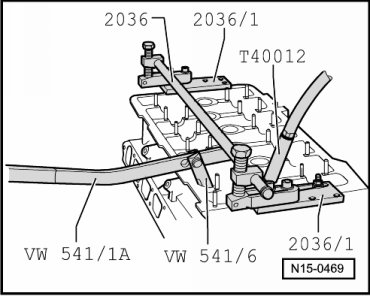
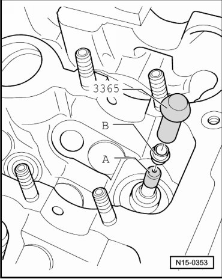

Valve Guide Seal: Service and Repair
Valve Stem Seals
Special tools, testers and auxiliary items required
• Valve lever (VW 541/1 A) with thrust piece (VW 541/6)
• Adjustable rod (2036) with adapter plates (2036/1)
• Spark plug removal tool (3122 B)
• Valve seal removal tool (3364)
• Valve stem seal driver (3365)
• Adapter (T40012/1)
Torque wrench (5 to 50 Nm) (V.A.G 1331)
Removing
- Camshafts, removing --> [ Camshafts ] Camshafts.
- Remove roller rocker lever together with support elements and place on a clean surface.
- Ensure the roller rocker levers and the support elements are not interchanged.
- Remove spark plugs using spark plug removal tool (3122 B).
- Move piston for respective cylinder to "Bottom Dead Center (BDC) position".
- Insert adjustable rod (2036) with adapter plates (2036/1) and adjust bearing.

- Screw adapter (T40012/1) into spark plug hole, connect the compressed air line with a commercially available adapter and apply a constant pressure. At least 6 bar.
- Remove valve springs with valve lever (VW 541/1 A) and pressure piece (VW 541/6).
• Tight keepers can be loosened by tapping lightly on the lever.
- Remove valve stem seals using valve seal removal tool (3364).
Installing
- Place plastic sleeve - A - on valve stem to prevent damage to new valve stem oil seals.

- Oil the sealing lip of valve stem oil seal - B -, insert into valve stem seal driver (3365) and carefully slide onto valve guide.
- Install camshafts --> [ Camshafts ] Camshafts.
How to adjust valve timing --> [ Intermediate Driveshaft and Camshaft Drive Timing Chains, Installing ] Intermediate Driveshaft and Camshaft Drive Timing Chains, Installing.